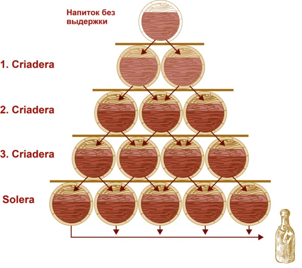

О культуре пития .. Система выдержки Criadera and Solera («Криадера и солера»). . .


Систему «Криадера и солера» применяют для выдержки таких напитков, как херес, мадера, лилле и портвейн, вин «Марсала», «Мавродафни», «Мускат», «Коммандария» и других крепленых, а также хересного бренди, пива, рома и виски. Особенно этот метод популярен в Испании и Португалии. Это сложная схема, в результате которой получается купаж «разновозрастных» спиртов, а производитель может гарантировать соответствие напитка определенному уровню качества, даже если какой-то год был неурожайным.
Принцип выдержки
Из бочек выстраивают многоярусную пирамиду, в нижнем ряду от пола – солере (от исп. solera – «на земле») – содержится самая выдержанная жидкость. В стоящей сверху криадере (от исп. criadera – «колыбель») налит более молодой спирт, уровнем выше – еще моложе, и, наконец, в последнем ярусе (а их может быть от 3 до 15) содержится напиток с минимальной выдержкой или вовсе сразу после перегонки.
Для разлива в бутылки используют вино или бренди из солеры, а освободившееся место тут же заполняют спиртом из следующего этажа. Там образуется пустое пространство, в которое заливают алкоголь из верхнего яруса, и так до конца. В последнюю криадеру наливают молодое вино (пиво или бренди). Бочки не обязательно располагаются башенкой (это делают для экономии пространства), а могут лежать рядом. Достаточно просто соответствующей нумерации, чтобы виноделы не запутались.

Схема выдержки по системе «Криадера и солера»
Нюансы технологии
Изъятие порций (и, соответственно, добавление новых, молодых) происходит через равные промежутки времени – обычно раз в год, с новым урожаем, но может быть и чаще. Бочку опустошают максимум на треть (обычно на 10—15%), так что даже после 50—100 циклов в солере все равно остается частичка самой первой партии. Современные виноделы точно высчитывают процентное содержание всех порций специальными компьютерными программами.
Строго говоря, указывать возраст напитка на этикетке не требуется, однако многие производители это делают в маркетинговых целях. Чаще всего пишут год основания солеры, однако могут также высчитывать средний возраст купажа. Если напиток выдержан по системе «Криадера и солера», то на этикетке обязательно будет маркировка Solera.
Виды выдержки бренди солера
Виноградные спирты, подвергшиеся старению по этой системе, делятся на три вида:
– solera (солера) – 6—12 месяцев выдержки;
– solera reserva (солера резерва) – 1—3 года;
– solera gran reserva (солера гран резерва) – более трех лет.
Для других напитков подобной классификации нет.
Преимущества и недостатки
Плюсы системы «Криадера и солера»:
– молодой напиток «освежает» купаж, а старый его «облагораживает». Независимо от особенностей урожая того или иного года, конечный результат всегда получается качественным;
– постоянное смешивание активизирует окислительные процессы, ускоряет созревание. Соответственно, необходимые органолептические характеристики достигаются быстрее, а себестоимость продукта почти не повышается;
– подбирая разные бочки (старые или новые, дубовые или из другой древесины и т. д.), можно заранее задавать требуемые параметры готового напитка, влиять на вкус и аромат;
– система дает возможность виноделам провести биологическое старение хереса, так как без регулярных вливаний новых порций напитка дрожжи не получают необходимых питательных веществ и погибают.
Недостаток: солера начинает окупать себя минимум через 5—10 лет. Чтобы напиток получился по-настоящему эксклюзивным, требуется гораздо больше времени. Содержание бочек и помещения с подходящим микроклиматом требует постоянных расходов, а доходы поступают не сразу. Получается серьезное капиталовложение, которое может по-настоящему окупиться только у наследников винодела. Для потребителей это значит, что цена на сделанное по такой системе спиртное зачастую выше, чем на аналогичное при обычной выдержке в дубовых бочках.